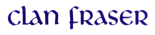
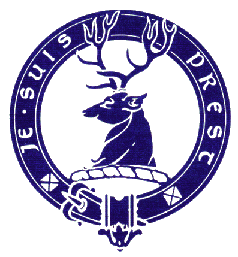

Origin of Name Fraser
There are many stories about the origin of the name Fraser. Most of these involve a person growing or giving a plate of strawberries to a person of importance who either granted the right to bear strawberry flowers on their arms or gave the name Fraiser to the bearer of the strawberries. The truth of these stories is unknown but is generally believed that the name Fraser traces its origins to the French provinces of Anjou and Normandy. The French word for strawberry is fraise and growers are called fraisiers. Seemingly bearing out this connection, the Fraser arms are silver strawberry flowers on a field of blue.
Beginning of Clan Fraser
The first recorded Fraser in Scotland appears to be a Simon Fraser who made a gift of a church at Keith, in East Lothan, to the monks of Kesio Abbey. From East Lothian, the Frasers moved into Tweeddale in the 12th and 13th centuries and from there into the countries of Stirling, Angus, Inverness, and Aberdeen.
Fraser families were of Touch-fraser, Drumelzier and Hales, Oliver Castle, Cometoun, Fruid, Frendraught Cowie, Forgien and Tuliofour. From the family of Fruid descended the Frasers of Tain, Munlochy, Phopachy, Dunballoch, Newton, Kingillie and Fanellan.
Lords Fraser
Thomas Fraser of Cornetoun in Stirlingshire was a descendant of the Frasers of Touch-fraser. In 1366, he exchanged lands in Stirlingshire for those of Kinmundy, Aberdeenshire. His grandson, Thomas, exchanged the estate of Cornetoun for Stanywood and Muchalls in Aberdeenshire. Andrew Fraser, became the Lord Fraser in 1633. He completed Castle Fraser in 1636. The castle near lnverurie, Aberdeenshire, is under the care of the National Trust for Scotland. The title became extinct on October 12, 1720 when Charles, 4th Lord Fraser, died without issue or collateral male heir.
Frasers of Philorth-Lords Saltoun
The Frasers of Philorth are descended from the Frasers of Touch-fraser and trace their lines back to Sir Gilbert Fraser, Sheriff of Traquair and of Peebles. Sir Alexander Fraser, 8th of Philorth, was founder of Fraserburgh for which he obtained charters in 1588 and 1592. He also built Fraserburgh Castle at Kinnaird Head in 1570. In 1669, Alexander Fraser, 10th of Philorth, acquired the title of 1Oth Lord Saltoun through his mother whose ancestor’s were the Abernethy’s who held the title from 1445. Being the senior line of the Fraser family, the Lords Saltoun are chiefs of the name and arms of the whole Clan Fraser.
Caimbulg Castle, home of the chiefs, is located near Fraserburgh, Aberdeenshire. The crest of the Frasers, Lord Saltoun, is a strawberry plant on a mound. The motto is "ALL MY HOPE IS IN GOD." Families of Philorth are of Ardglasse, Broadland, Findrack Forest and Durris, Fraserfield, Hospitafield, Lonmay, Memsie, Park, Quarrelbuss, Rathillock, Techmuiry, Tornaveen and Tyrie.
Frasers of Lovat
The Lovat Frasers descend from a brother of Sr Alexander of Touch-fraser, Chamberlain of Scotland. Documents, dated September 12, 1367, connect a Fraser with the lands of Lovat and the Aird. Among the lands acquired by the Lovat Frasers, the prominent ones were in Stratherrick, which was very dear to the hearts of the Lovat chiefs, the church lands of Beauly Priory in Inverness-shire, part of the south shore of Beauly Firth, and the whole of Strathfarrar. Beauly Priory was founded in 1200 by John Bissett, who also built Lovat Castle. Hugh Fraser was 6th chief and became the first Lord Fraser of Lovat around 1400.
The name Lovat means "a swampy plain." The old war cry "A’Mhorfhaich' means "the sea field." Castle Dounie was home of the chiefs of Lovat from 151 1 until it was burned following Culloden. The present home of the chief is Beaufort Castle, Beauly, Inverness-shire.
The plant badge is yew. The war cry "Caisteal Dhuni" refers to Castle Dounie while the pipe music is Lovat’s March. The crest is a buck’s head with the motto "Je Suis Prest', old French for "I Am Ready."
The chiefs are called "MacShimi" which means the son of Simon. Families of Lovat are of Abersky, Achnagaim, Ardochy, Balmain, Balloan, Belladrum, Boblanie, Bochrubin, Brae, Bught, Castleleather, Cleragh, Clunevachie, Culbokie, Culduthel, Cumiln, Drumdoe, Erchill, Errogie, Eskadale, Farraline, Foyness, Giusachan, Golford, Gortuleg, lnverallocky, Kilarlity, Kinneries, Knock, Kyllachie, Leadclune, Moniack, Mulzie, Phingask, Reelig, Ruthven, Strichen, Struy and Teanakyle.
Tartans
There are a number of tartans associated with the Frasers. The most popular commercial tartans are the Modem Dress Fraser and the Hunting Fraser. Also produced are the Lovat Fraser and the Old Fraser, the latter being the oldest known, dating back to 1794.
Names of Clan Fraser
Listed below are some of the more common spellings of names associated with Clan Fraser. There are many variations in ancient and current spelling, which space will not allow to be printed below. If your ancestry is Scottish and the spelling is similar, you can obtain more information from the Clan Fraser Society.
Abernethy Frasure
Biset Frayser
Bisset Fraysuir
Bissett Frazar
Brewster Frazee
Cowey Frazer
Cowie Frazier
Cowy Frazure
Fraher Frazzar
Fraizer Freser
Frasher Frew
Frashier Frezel
Frashure Frezell
Frasier Frisale
Frasuer Friseal
Frisell McShimmie
Frissell MacSimon
Frizell MacSymon
Frizelle MacTavish
Gelruth Oliver
Gilroy Revie
Gilruth Revey
Grewar Sim
Grewer Sime
Gruar Simes
Gruer Simeson
Kimm Simmie
Lovat Simon
Lovett Simons
MacGillreick Simpkins
MacGrewar Simpson
MacGrewer Sims
MacGruar Simson
MacGruer Sym
Macllaraith Syme
Macllarith Symes
MacIlleriach Symon
MacIllrick Symons
MacIlraith Symson
MacIlreach Twaddell
MacIlriach Twaddle
Macllurick Tweedel
Maclmmey Tweedle
MacImmie Tweedale
MacKeeman Tweeddale
MacKemmie Tweeddell
MacKim Tweedie
MacKimmie Tweedle
MacKimmy Tweedy
All the above information was obtained from:
Clan Fraser Society of North America
P.O. Box 7502
Chico, CA 95927-7502
return to Fiona's Cottage